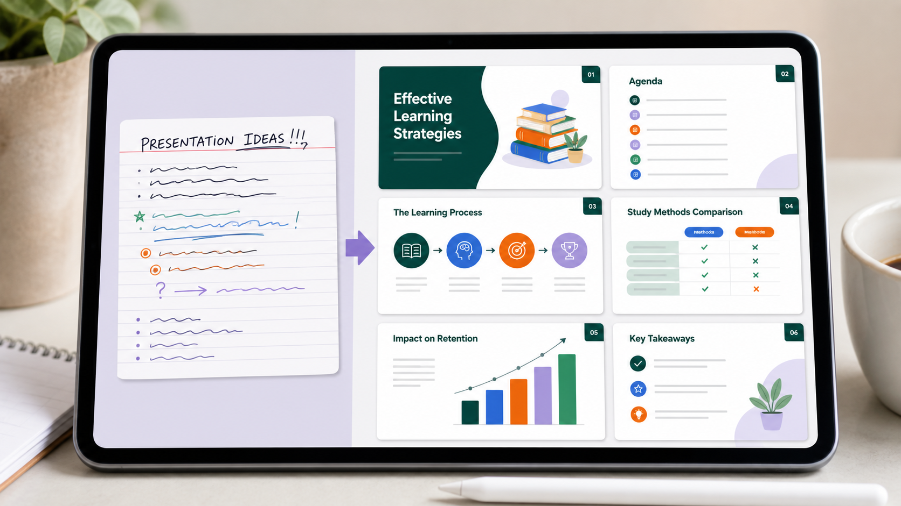

Промтзилла
Чтобы получить нормальную презентацию, проси ИИ сначала собрать логику выступления, а уже потом раскладывать текст по слайдам.

Пошаговая инструкция
- 1Собери исходный текст, факты, цель презентации и аудиторию.
- 2Открой Study24 AI и попроси сначала сделать структуру слайдов.
- 3Укажи формат: 7, 10 или 15 слайдов, деловой или учебный стиль.
- 4Попроси для каждого слайда заголовок, тезисы, идею визуала и заметки спикера.
- 5После структуры отдельно попроси сократить текст и усилить первые/последние слайды.
Какой результат просить
Хорошая презентация не копирует весь текст, а превращает его в сценарий: проблема, аргументы, примеры, вывод. Для такого сценария можно использовать Study24 AI: загрузи исходные материалы, вставь промт и попроси несколько вариантов.
Промт
RU
Сделай презентацию из этого текста. Цель презентации: [укажи цель] Аудитория: [кто будет смотреть] Формат: [количество слайдов] Стиль: ясный, современный, без перегруза текстом. Исходный текст: [вставь текст] Подготовь: — структуру презентации; — заголовок каждого слайда; — 3-5 коротких тезисов на слайд; — идею визуала для каждого слайда; — заметки докладчика; — сильный первый слайд и понятный финальный вывод. Не копируй текст абзацами. Сократи, сгруппируй и сделай логику выступления понятной.
EN
Create a presentation from this text. Presentation goal: [specify goal] Audience: [who will watch] Format: [number of slides] Style: clear, modern, not overloaded with text. Source text: [paste text] Prepare: — presentation structure; — title for each slide; — 3-5 short bullet points per slide; — visual idea for each slide; — speaker notes; — a strong opening slide and a clear final takeaway. Do not copy full paragraphs. Condense, group, and make the presentation logic easy to follow.
Важно
Факты, цифры и источники после генерации нужно проверить вручную: ИИ хорошо структурирует, но может ошибиться в деталях.
Теги